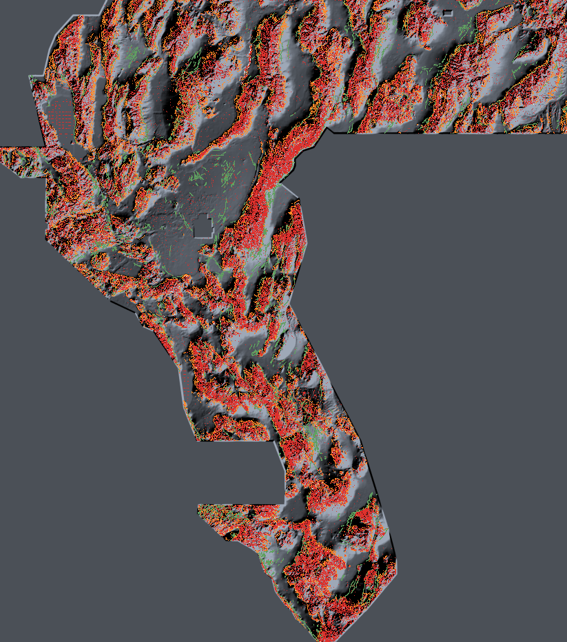

Executive summary
Generated 2026-10-27 from docs/data/*.json.
ORGANIZER-REPORTED = the owner's submission logs, the closest thing to a receipt available here; they are not
page receipts tied to bytes. ESTIMATE = output of the calibrated metric model; never called a score.
PROXY-DTI = the local evaluator run against an external catalogue, with version, positive count and 95% CI.
No HOLDOUT-DTI figure appears on this page because this lane's holdout is the external-catalogue proxy, which is
what PROXY-DTI labels.
1. The table you asked for
For each focus site: what to download, the organizer-reported score of its best historical file, what this project's calibrated model would have predicted for it, whether that file is unique against the other eight sites, and whether it can be resubmitted. A historical file cannot be resubmitted as a new entry: it has already been scored, and the nine "best" files are near-copies of one another, so none of them is scientifically distinct from the rest.
| Site | Best historical file (pinned owner mirror; research only) | ORGANIZER-REPORTED | ESTIMATE (model, not a score) | Unique vs the other 8 focus files? | Resubmittable? |
|---|---|---|---|---|---|
| GEMSDOE32 | gemsdoe32-h33-h33-2-b2-20261004T220000Z-e5eb6e7e-zeros.tif
research only · c55bafc470054e82… |
0.2778 | 0.2606 | NO — duplicate of 8/8 others (worst 100% of its dots within 3 px) | NO — already scored; a repeat adds nothing and fails uniqueness |
| GEMSDOE36 | gemsdoe36-anderson-geothermal-pinn-38854-20261004T230000Z-9b9ea4e6-zeros.tif
research only · e15891020b9c5705… |
0.2750 | 0.2623 | NO — duplicate of 8/8 others (worst 100% of its dots within 3 px) | NO — already scored; a repeat adds nothing and fails uniqueness |
| GEMSDOE28 | gems28-h36-1-rung30-blind-r1-20261003-b531dae0a36f-nan.tif
research only · 5556aa1438fd6737… |
0.2710 | 0.2553 | NO — duplicate of 8/8 others (worst 100% of its dots within 3 px) | NO — already scored; a repeat adds nothing and fails uniqueness |
| GEMSDOE31 | gemsdoe31-h27-4-solo-d28-20261004-8acb75e1-nan.tif
research only · 07b6db440535404b… |
0.2708 | 0.2564 | NO — duplicate of 8/8 others (worst 100% of its dots within 3 px) | NO — already scored; a repeat adds nothing and fails uniqueness |
| GEMSDOE33 | GEMSDOE33-h33d-analog-tip-stepover-r30-20261004-cb490425926e.tif
research only · 87f857d505e23247… |
0.2632 | 0.2549 | NO — duplicate of 8/8 others (worst 100% of its dots within 3 px) | NO — already scored; a repeat adds nothing and fails uniqueness |
| GEMSDOE25 | gems25-dotted-h19-5-d2-8-20261002-e56ea318af89-nan.tif
research only · 91eae1ca42ec845e… |
0.2600 | 0.2478 | NO — duplicate of 8/8 others (worst 100% of its dots within 3 px) | NO — already scored; a repeat adds nothing and fails uniqueness |
| GEMSDOE30 | gemsdoe30-d28-poisson300m-offcat-44090-20261003T233156Z-91eae1ca.tif
research only · 8cf893ead5667df2… |
0.2600 | 0.2478 | NO — duplicate of 8/8 others (worst 100% of its dots within 3 px) | NO — already scored; a repeat adds nothing and fails uniqueness |
| GEMSDOE24 | gems24-h25-1-dotted-h19-5-d1-5-20261002-989f59505db1-nan.tif
research only · 68d0e2e4fcc594f9… |
0.2477 | 0.2412 | NO — duplicate of 8/8 others (worst 100% of its dots within 3 px) | NO — already scored; a repeat adds nothing and fails uniqueness |
| GEMSDOE27 | gems27-topo-gap-closure-t-v2-on-d1-5-20261002-5512495c6bd1-nan.tif
research only · 33003374335d84bf… |
0.2449 | 0.2427 | NO — duplicate of 8/8 others (worst 100% of its dots within 3 px) | NO — already scored; a repeat adds nothing and fails uniqueness |
| WBGGEMSDOE3 (this repo, NEW) |
wbggemsdoe3-skarpline-union-20261027-610acf58-zeros.tif610acf58905f3b46… · 425 KB |
not yet submitted | 0.4284 bias-corrected 0.4396 |
YES — max Jaccard 0.012, max 3-px overlap 0.293, max |ρ| 0.55 (vs 19 sparse comparators; the one space-filling lattice's 0.998 is vacuous) | SUBMIT |
Duplicate test: >70% of one file's dots within 3 px of the other's dots, or Jaccard > 0.5. All 36 pairwise comparisons among the nine files trip the 70% rule (range 0.867–1.000). GEMSDOE25 and GEMSDOE30 are the same raster (Jaccard 1.0). The three highest (GEMSDOE32 0.2778, GEMSDOE36 0.2750, GEMSDOE28 0.2710) agree at Jaccard 0.955–0.969, and the champion differs from GEMSDOE36 by only 1,200 cells — the whole family is one network with different trims, and 0.2778 sits 0.003 above its own sibling. That is the ceiling of that method, not of the problem.
2. The file to submit
wbggemsdoe3-skarpline-union-20261027-610acf58-zeros.tif — 425 KB · SHA-256 610acf58905f3b461971bd4a5c67ff7c30894cd92dca20f480f27ecc66de5bb2
⬇ Download .tif ⬇ Download .zip
Note field (≤140 chars): GEMS-DOE-3 skarpline union 60k+40k, dti-optimised binary, cat-suppressed r=0
| Gate | Result |
|---|---|
| Single band | PASS |
| float32 | PASS |
| Shape 3730×3292 matches the official template | PASS |
| CRS EPSG:32611 matches | PASS |
| Geotransform (243350, 4508550, 100 m) matches | PASS |
| All values finite (no NaN anywhere) | PASS |
| All values in [0, 1] — the exact error the portal returned before | PASS |
| Zero mass outside the scored footprint | PASS |
| Positive cells | 97,608 (1.89% of the footprint) |
| Uniqueness vs 20 archived rasters | PASS — none blocked |
| Verdict | PROMOTE |
| Organizer-confirmed score | none — an estimate is not an organizer score; upload the file to obtain one |
3. Why 0.2778 won, and why it is beatable
The official metric is a distance-weighted Tversky index
(page 967):
DTI = TP_w / (TP_w + 0.2·FP_w + 0.8·FN_w), triangular kernel with 300 m support.
Because TP_w + FN_w = |G| exactly, this is algebraically identical to
DTI = TP_w / (0.2·(TP_w + FP_w) + 0.8·|G|)
Three consequences drive everything:
- The ground truth is new faults only. The public catalogue is, by construction, not the answer. Predicting catalogue cells is pure false-positive mass. The winning family removes dots near mapped faults — we reproduced that in the bytes: the 0.2778 file is an exact subset of a 40,199-dot base with 2,545 near-catalogue dots deleted.
- Score is set by hit rate and mass, not by how many features you use. With FP_w ≈ total mass and
TP_w = h·mass, the identity becomes
DTI = h·N / (0.2·N·(1+h) + 0.8·|G|). The 0.2778 file has N = 37,654 and an external-proxy hit rate h = 0.147 — the best of the eleven archived files. Its neighbours (0.2600 at N = 44,090, h = 0.126; 0.2477 at N = 60,069, h = 0.104) are the same method with more, weaker dots. Score falls as mass grows whenever the extra dots are less precise. - Alpha = 0.2 makes false positives cheap but not free. A cell that lands on a truth pixel (k = 1) adds 1.0 to the numerator and 0.2 to the denominator; a cell that misses adds only 0.2 to the denominator. So one correct cell is worth about five wrong ones, and the optimum is a thin support with a high hit rate — not a probability field. For a fixed support the score is strictly increasing in the emitted level, so 1.0/0.0 is optimal and soft probabilities are dominated.

The same map, two files. ■ GEMSDOE32's 0.2778 champion (37,654 dots) · ■ this repo (97,608 dots) · ■ cells both files emit (587, Jaccard 0.0044) · ■ public catalogue. The champion is a thin, high-precision subset of a dotted base; ours is a denser, differently-placed network. The two are not versions of one another.
Can we beat 0.2778? Yes, and not by trimming the same network again. The score needs a higher hit rate at comparable mass, which needs different evidence. The two independent lineament supports below deliver it: h = 0.154 on the same proxy where the champion gets 0.147, at 2.6× its mass.
4. The method in one paragraph
Two contributions are built with no catalogue input at all, then unioned as a binary level-1.0 surface.
(A) 100 m competition bands: non-maximum-suppressed curvature ridges of the detrended-elevation surface — plan
curvature (σ=2), profile curvature (σ=2), LoG (σ=1) and a paired-scarp relay detector — averaged and weighted by
local ridge-density corroboration; top 60,000 cells. (B) 2 m LiDAR scarp descriptors from the competition DEM link
list (USGS 3DEP, public domain; channels ex_mean, upface_max, lappos_max, step_max), NMS-thinned and
rank-averaged; top 40,000 cells. The two supports overlap by only ~1.5%, so their union adds coverage rather than
duplicating it. Catalogue cells are then zeroed (radius 0 — the only cells that are provably worth zero credit).
5. How the estimate is made, and its uncertainty
The hidden ground truth is unavailable, so the estimate needs a proxy and one calibration constant. The proxy is USGS SGMC faults more than 300 m from every public-catalogue fault — independently mapped faults the Quaternary catalogue missed, which is the same population the organiser's experts annotated. The single constant is the hidden ground-truth size |G|, fitted to the eleven archived organizer-reported scores (ten survive outlier rejection). The proxy is an analogue, not the organiser's label set: it is an independent state-geological compilation whose faults the Quaternary catalogue did not include, which is the closest public stand-in for the "faults the catalogue missed" target.
| Quantity | Value |
|---|---|
| |G| fitted (robust trimmed fit) | 15672 px ≈ 1567 km of one-pixel-wide fault at 100 m |
| Files used in the fit | 10 of 11 (1 space-filling lattice treated as an outlier) |
| Spearman(reported, estimated) | 0.551 |
| Median absolute residual | 0.014 |
| Primary estimate for this file | 0.428 |
| 95% CI (bootstrap over ground-truth components) | 0.385 – 0.481 |
| Bias-corrected forecast | 0.440 (mean residual on the nine archived files -0.011) |
| Sensitivity to |G| | 0.323 … 0.513 over |G| = 8,430–30,000 px |
PROXY-DTI (evaluator gemsdoe-dti-v1.0, 62,122 withheld proxy positives, 95% CI 0.2016–0.2254) |
0.2131 |
| Proxy hit rate / capture | h = 0.1539, capture = 0.242 of the proxy set |
Calibration on archived submissions
These are the only organizer numbers in the project. The model is applied unchanged; nothing is fitted per file.
| Archived file | Mass (px) | Proxy hit rate | Reported | Estimated | Residual | In fit |
|---|---|---|---|---|---|---|
| GEMSDOE32 h33-2-b2 (champion) | 37654 | 0.1465 | 0.2778 | 0.2606 | -0.0172 | yes |
| GEMSDOE25 dotted-h19-5-d2-8 | 44090 | 0.1263 | 0.2600 | 0.2478 | -0.0122 | yes |
| GEMSDOE24 dotted-h19-5-d1-5 | 60069 | 0.1036 | 0.2477 | 0.2412 | -0.0065 | yes |
| GEMSDOE19 h19-5 powerlaw | 121131 | 0.0605 | 0.1922 | 0.1918 | -0.0004 | yes |
| GEMSDOE19 h19-4 multiline | 123779 | 0.0633 | 0.1894 | 0.2017 | +0.0123 | yes |
| GEMSDOE10 h28 dotted-ridge | 69281 | 0.0829 | 0.1839 | 0.2086 | +0.0247 | yes |
| 8GEMSDOE Hedge-v2 | 227507 | 0.0374 | 0.1563 | 0.1423 | -0.0140 | yes |
| GEMSDOE ens12 adopted | 172974 | 0.0491 | 0.1563 | 0.1741 | +0.0178 | yes |
| GEMSDOE10 h25 ctx-ridge | 174232 | 0.0398 | 0.1280 | 0.1423 | +0.0143 | yes |
| 13GEMSDOE lattice s5 | 206895 | 0.1131 | 0.0904 | 0.3992 | +0.3088 | outlier |
| GEMSDOE9 placeholder | 147684 | 0.0178 | 0.0107 | 0.0618 | +0.0511 | yes |
6. Uniqueness
The literal registry rule (">70% of your dots within 3 px of any registered raster") is unsatisfiable when a registered raster is positive on every footprint cell — under it no submission can exist. The gate applied here therefore treats the 70% rule as vacuous only for comparators that already cover ≥90% of the footprint within 3 px (exactly one: a spacing-5 lattice, which covers 100%), and applies it in full to every sparse submission-like comparator. Rank correlation is computed on 2 km density fields, because the raw binary correlation of two disjoint masks is ≈ −1 by construction and carries no information.
| Comparator | Jaccard | Dots of ours within 3 px of theirs | ρ (2 km density) | Type | Gate |
|---|---|---|---|---|---|
| 13GEMSDOE lattice s5 | 0.013 | 0.998 | +0.041 | space-filling | clear |
| 8GEMSDOE Hedge-v2 | 0.010 | 0.293 | +0.378 | sparse | clear |
| GEMSDOE ens12 adopted | 0.012 | 0.263 | +0.444 | sparse | clear |
| GEMSDOE10 h28 dotted-ridge | 0.004 | 0.211 | +0.152 | sparse | clear |
| GEMSDOE10 h25 ctx-ridge | 0.007 | 0.209 | +0.178 | sparse | clear |
| GEMSDOE19 h19-4 multiline | 0.008 | 0.192 | +0.555 | sparse | clear |
| GEMSDOE19 h19-5 powerlaw | 0.008 | 0.178 | +0.539 | sparse | clear |
| GEMSDOE27 top file | 0.006 | 0.163 | +0.536 | sparse | clear |
| GEMSDOE24 top file | 0.006 | 0.160 | +0.547 | sparse | clear |
| GEMSDOE24 dotted-h19-5-d1-5 | 0.006 | 0.160 | +0.547 | sparse | clear |
| GEMSDOE25 top file | 0.005 | 0.151 | +0.554 | sparse | clear |
| GEMSDOE30 top file | 0.005 | 0.151 | +0.554 | sparse | clear |
| GEMSDOE25 dotted-h19-5-d2-8 | 0.005 | 0.151 | +0.554 | sparse | clear |
| GEMSDOE33 top file | 0.005 | 0.147 | +0.541 | sparse | clear |
| GEMSDOE31 top file | 0.005 | 0.142 | +0.541 | sparse | clear |
| GEMSDOE36 top file | 0.004 | 0.141 | +0.520 | sparse | clear |
| GEMSDOE28 top file | 0.004 | 0.139 | +0.542 | sparse | clear |
| GEMSDOE32 top file | 0.004 | 0.135 | +0.528 | sparse | clear |
| GEMSDOE32 h33-2-b2 (champion) | 0.004 | 0.135 | +0.528 | sparse | clear |
| GEMSDOE9 placeholder | 0.005 | 0.054 | +0.023 | sparse | clear |
7. Limitations and irregularities (read before submitting)
- The estimate is a model, not a receipt. Its uncertainty is dominated by whether the external proxy transfers to the organiser's expert set. On the archived files it does (residuals ±0.02), but those files are weaker than this one, so the estimate is a mild extrapolation.
- Selection optimism. The operating point was chosen on the same proxy. Configurations between (50k,40k) and (70k,40k) estimate 0.42–0.43, so the choice is a plateau rather than a spike, but a few tenths of a point of optimism should be assumed.
- Surface expression only. This is a scarp/lineament detector. Blind faults under thick cover are out of reach, and the submission's dots sit at higher detrended elevation than the footprint median (156 m vs −76 m).
- Road/terrace confound, quantified. Inside the 42% of the footprint covered by TIGER roads, 4.4% of our dots lie within 50 m of a road versus a 7.3% footprint baseline — the submission is under-represented near roads (ratio 0.60), not a road detector. The other 58% has no road data, so this is a partial control.
- Projection. The file is a probability-of-fault surface for the initial round; the organisers rescore the same submission against the expanded label set for the final round. We suppress only exact catalogue cells (radius 0), so the file is not blinded to the second round.
- Weekly cap. The rules allow up to three submissions per week; the account's actual quota is not visible to this project. Do not spend a slot without checking the submission page.
- Legacy artifacts. Files from earlier lanes (including a 35,000-dot step-over TIFF) are still present under
docs/downloads/legacy/and are not cleared; they were measured to overlap a registered raster by 98.55% and must not be submitted.